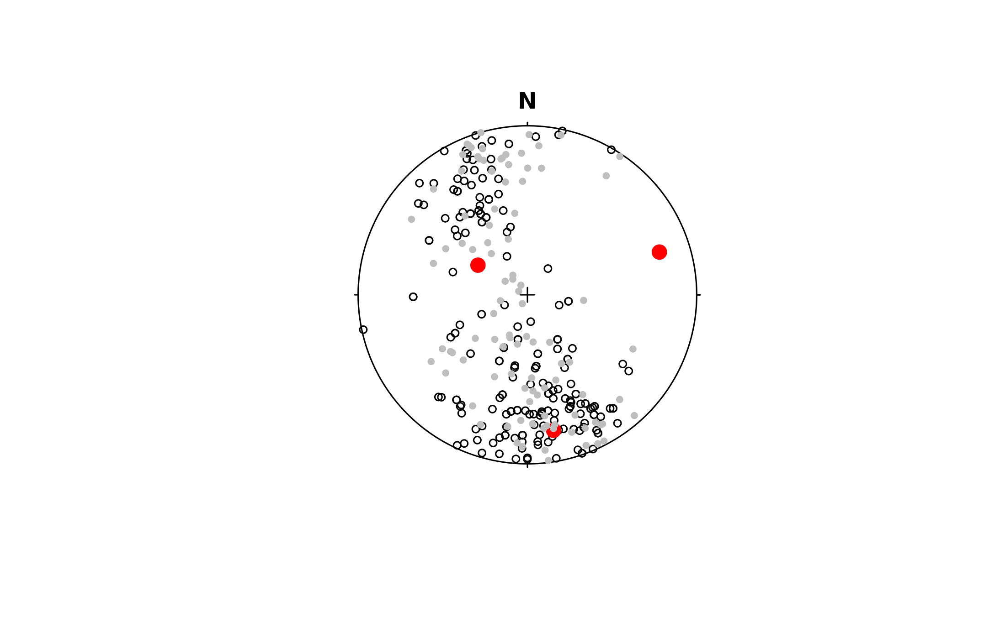

Maximum likelihood estimation of the Bingham distribution parameters.
Source:R/inference.R
bingham-mle.RdMLE parameters of a Bingham distribution for anisotropic axial vectors. Uses a numerical integration (to compute the normalization constant) inside an numerical optimization (to maximize the likelihood). The Bingham probability density is proportional to \(\exp{(-x^T A x)}\), not \(\exp{(x^T A x)}\).
Usage
bingham_MLE(x, w, n_nonadapt, n_steps)
# S3 method for class 'Vec3'
bingham_MLE(x, w = NULL, n_nonadapt = 5L, n_steps = 1000L)
# S3 method for class 'Line'
bingham_MLE(x, w = NULL, n_nonadapt = 5L, n_steps = 1000L)
# S3 method for class 'Plane'
bingham_MLE(x, w = NULL, n_nonadapt = 5L, n_steps = 1000L)Arguments
- x
object of class
"Vec3","Line", or"Plane", where the rows are the observations and the columns are the coordinates.- w
optional weights for each observation in
x. A vector of real numbers (non-negative), of length equal tox. They need not sum to 1; the function automatically normalizes them to do so.- n_nonadapt
A real number (non-negative integer). The number of refinements to use in the numerical integration. Note that each increment of
n_nonadaptincreases time and memory requirements by a factor of 4!- n_steps
A real number (positive integer). The number of steps to use in the numerical optimization.
Value
A list with members
Asymmetric 3x3 real matrix A,
valuesa real 3D vector; the eigenvalues of A; sum to zero,
vectorsa rotation matrix; the eigenvectors of A are the columns,
errorinteger; increase
n_stepsiferror!= 0, andminEigenvaluethe minimum eigenvalue of the Hessian at the putative optimum; worry if this is not positive.
See also
bingham_inference() for confidence regions, and rbingham() to
simulate a distribution.
Other distribution-MLE:
dist.mle,
fisher-mle,
watson-mle
Examples
set.seed(2025041)
r <- bingham_MLE(example_planes)
print(r)
#> $error
#> [1] 0
#>
#> $minEigenvalue
#> [1] 0.05781531
#>
#> $A
#> [,1] [,2] [,3]
#> [1,] -2.1069402 1.569431 0.9911088
#> [2,] 1.5694313 2.844694 1.3531322
#> [3,] 0.9911088 1.353132 -0.7377538
#>
#> $values
#> [1] -2.766389 -1.081471 3.847860
#>
#> $vectors
#> Line object (n = 3):
#> azimuth plunge
#> [1,] 169.08091 19.46169
#> [2,] 300.98901 62.11934
#> [3,] 72.03016 19.15562
#>
stereoplot()
points(example_planes, cex = 0.7)
points(r$vectors, col = 'red', pch = 16, cex = 1.5)
rnd <- rbingham(100, r$A, "Plane")
points(rnd, col = 'grey', cex = 0.7, pch = 16)
